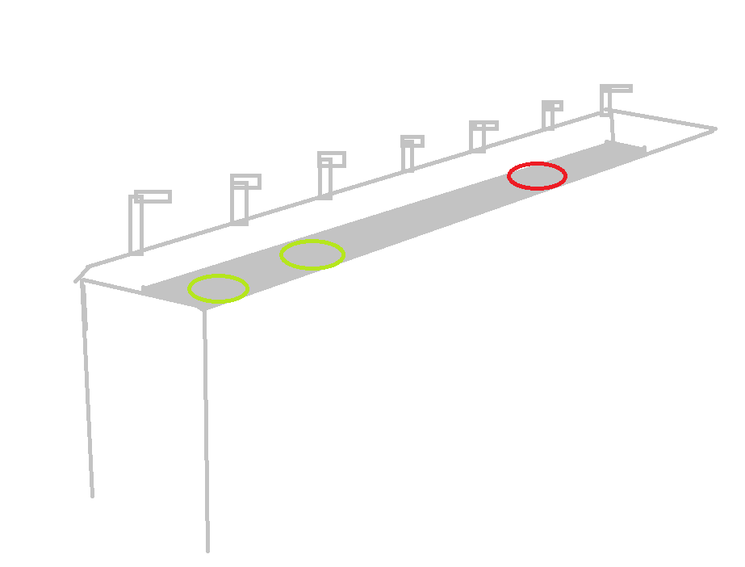
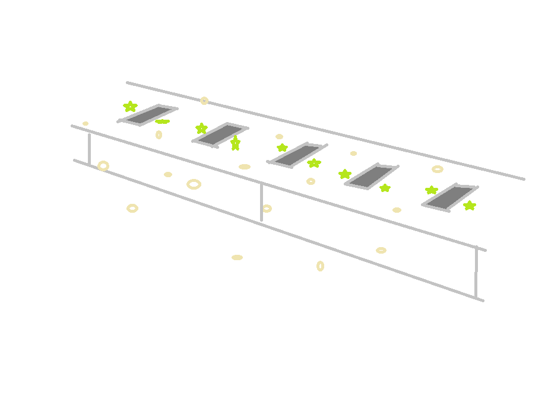

我的生平（十三）
我大抵是老了。
最近听到高中开始双休的消息，让我想起了我以前读书的时候。有些事情过去太久已经无从考证了。
我在零几年的时候在陕西省周至县上过学。学校的名字已经忘记了。只记得那个学校是寄宿制。我爸在某个酒局上听说了这个学校，就一拍大腿把我送了过去。
我在那个学校上了半年，也就是一个学期。
那个学校有教学楼、操场、食堂、厕所、垃圾场、浴室、宿舍等等。以下是我根据回忆画的地图。

北方的所有人都是在浴室一起洗澡的，浴室有很多喷头。女性和男性分开，所有人在浴室里脱光光洗澡。
浴室的热水大概是用煤炭烧的。我在锅炉房见过一些负责烧煤的男老师。（所有孩子在学校，见了大人一律叫老师）。
宿舍并没有洗漱的地方，所有人都要在早上拿着脸盆、毛巾、牙刷牙膏走到洗漱的地方，用冷水刷牙洗脸。 洗漱的地方长这样，在户外，只有冷水。

宿舍和教学楼好像是同一栋楼，宿舍在一楼，教学楼在楼上。老师和学生睡同样的宿舍。宿舍的床分为上下铺双层，当时我们宿舍有一个女老师和我们一起住。她会给我们讲睡前故事。
她说过她来自新疆，还将过如何讲葡萄制作成葡萄干。 一个宿舍大概住12人左右。具体有多少个人我忘了。也许是8个，也许是10个。反正不可能是2个或者4个。
宿舍和教学楼会有一些小偷，会偷你的吃的。
宿舍虽然有厕所，但不允许在厕所大便。因为在宿舍大便会有臭味。所以只能去地图上标注的”厕所“去大便。
宿舍的厕所是蹲厕，没有马桶。公共厕所连蹲坑都不是，绿色的部分是放脚的地方，每个人拉屎的时候还能聊天呢。白色的小圆点是”蛆“，也就是苍蝇的幼虫。
厕所没有洗手的地方，卫生纸要自己带。

学校的商店是个很小的窗口，只能买点有卫生问题的辣条之类的小商品。
食堂的饭是雪白的馍，上面爬满了苍蝇。

我没有手绘板，不好意思。这幅画是我拿windows的paint程序画的。黑色的不是芝麻，而是密密麻麻的苍蝇。上空的是在飞翔的苍蝇。
我觉得很恶心，所以就只喝粥。粥是小米粥。每周只有一次食堂有炒饭。我吃完了想多加一碗，也不行。抱歉，没有多余的。
没有鸡蛋、没有牛奶。我处于营养不良中，就这样过了半年。
期末考试，我考过全年级前几名，奖励好像是50元学费减免券。
那个时候一个班有很多个小孩，一个年级有很多班级。很多个是多少？40个以上，60个孩子也不稀奇。孩子多到甚至要坐到教室外面去。
在早读的时候，我开心的时候我会哼歌，我至今不明白为什么不能哼歌呢？
为什么我们要保持安静呢？
我们有早读，有晚自习，在教学楼需要待很久，至少10+小时。虽然我没进过监狱，但我觉得监狱大抵如此吧。大概有10天左右，我们作为囚犯有一次”假释“。
我还记得，我坐在秋千上荡秋千，有好事者问我，”你为什么不上学呢？“
我解释说，我在寄宿学校上学，学校放假了。这也说明，当时放假的时间并不是周六周日、一般的学校放假的时间。
所谓的学校，就是把社会底层的小孩关在一起。我后来才知道，有些地方的学校并不是这样的。
在中学，我经历过体罚。 体育课因为我忘记穿运动鞋，于是老师惩罚我不穿鞋在烈日下光脚跑步。
在上课交头接耳，聊天，老师惩罚我们（犯错的学生）在全班同学面前生吃大蒜。
还有什么原因我忘记了。孩子们把手伸出去，老师一排一排走过去用尺子打手心。
像是罚站之类的，更是毛毛雨，不值一提。
诸如此类。
很多时候被惩罚，并不是我故意的或者怎样。我小时候并不是一个调皮捣蛋的小孩。
澳大利亚的学校
为什么衡水二中这样做还能存在？ - 想上分的木乃伊的回答 - 知乎
https://www.zhihu.com/question/394319568/answer/2874324833
我对中国教育不太了解，就来说说我们澳洲中学吧。我的学校每天8:40开始上第一节课，下午2:55准时放学。每天有五个period，每个period一小时，一节课一个period。高三每周只有二十节课，也就是说我们5个period不用上。（有时候我们下午没课，一点就可以回家，上午第一节没课可以9:40来上学）我们上午茶时间十五分钟，午饭时间五十分钟。可以说每天只用上四个小时课。
我们的老师从来没有像衡水一样体罚过学生的记录（如果有早就被开除了）。上课时可以随意去厕所或者去drink tap喝水（理论上老师要把我们上课时外出记录在发下来的日记里，不过我们老师从来不管）。我们上课鼓励学生与老师互动，不懂的题目随时可以问，还可以和老师开玩笑（要分老师，不过百分之70%以上的老师都能容忍玩笑），比如我就曾在八年级历史课上问过我历史老师维京人养不养哈士奇。
我们每周理论上要写18-32小时作业，不过实际上老师尽量让我们在课堂时间完成作业，基本上每周作业时间相当于理论作业时间减半。我们学校每个班基本上只有10-25个人，老师可以花更多时间和学生互动。
补充：
看完这个问题下的更多回答后，我也决定来多写一点。首先澳洲老师骂学生的情况非常少。如果你没完成作业或者老师给你布置的考试的话可能会通知一下你家长，会警告学生，会和学生谈话问为什么会这样，要不要更多帮助，可是绝对绝对不会骂你蠢这类的话。学生如果感到压力大或者有家庭矛盾之类的心理问题还可以去wellbeing club（心理健康俱乐部），我没去过，不过老师反复强调如果心理健康出现问题在wellbeing club老师会帮助你（具体什么方法真不知道，推测主要以谈话为主）
在澳洲我的学校歧视和校园欺凌问题非常少。我们老师反复强调如果有人在网上发了让你不舒服的信息要告诉一个信得过的大人解决，如果遭遇校园霸凌可以寻求老师帮助也可以去wellbeing club，在澳洲对待这类问题很严肃，老师会给霸凌者detention（中午关禁闭，一般半个中午），after school detention（放学后禁闭）以及suspension（休学，一般一到两天），我们学校也有过一两个因为霸凌被开除的。种族歧视问题的话我们学校谈得很多。我今年英语三本要读的书两本都是关于种族歧视（一个是关于南非apartheid，一个发生在澳洲）。种族歧视问题我在这中学读了五年多从来没遇到过。
加更：
过千赞了，感谢点赞的人。希望各位都能过上自己想要的人生。
我们校长曾经在开学第一天的year level assembly（年级集会）上在演讲中对我们说过他的期望，我认为应该在这里分享一下。除了跟我们分享学习方法外，校长还劝诫我们要睡够九小时，这样才能在下一天积攒足够的精力学习。每天要好好的吃一顿早餐，这样我们不用在学习中饿肚子。最后，校长还希望我们在高三时“have fun”，要开心快乐。
这就是为什么我如此痛恨衡水这类的学校一样。衡水虽然可能可以将学生们的成绩提高，可是这是在违背我们的人性基础上。衡水这类学校剥夺了学生上厕所的能力，剥夺了学生睡九小时的权利，剥夺了学生“have fun”的权利。最后，学生在高三后除了成绩外一无所有。我认为高中学生应该有机会去和其他同学社交，应该有谈恋爱的权利和时间，应该有和家人互动的时间，在假期中应该有玩乐的时间。而不是将全部时间放在学习上，“两耳不闻窗外事，一心只读圣贤书。”虽然中国目前确实没有澳洲教育的条件，可是我在知乎上看到很多人对早恋这种正常的权利嗤之以鼻，对学校剥削学生的行为毫不在意，把不正常当作正常，把人们应有的权利当成放纵。这才是我为什么要写这个答案的真正原因。
最后，很遗憾，维京人不养哈士奇。不过我倒是写过维京人与哈士奇一起去劫掠英国的文章，算是弥补了维京人无法撸狗的遗憾吧。
再补充：
我高考期间也不算是太努力的人，每天学习大约是两三个小时左右，周末可能会学的久一点，有时候会学到四五个小时。我高考期间每天大概花在娱乐时间上有四五个小时左右。
衡水中学认为，必须要加紧奋斗才会出成果，所以他们没日没夜的学习，每天都花十几个小时在学习上。这在他们那里是合理的，因为他们只有这样才能考上985，211。可是我也希望他们在努力学习的时候，能够意识到他们这样做是“不好的，不正常的“。能够梦想着以后他们的高考压力能够尽可能像澳洲看齐，而不是把衡水模式作为一个正面典范推广到全国。